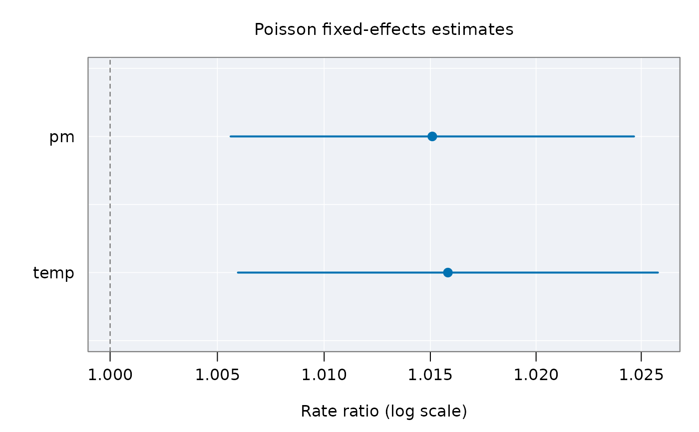

Fits a count model with one or two sets of fixed effects, such as place and day, absorbed rather than estimated as columns, an optional exposure (offset) and robust standard errors of several kinds. This is the estimator of Bondy, Roth and Sager (2020): daily counts of offences by ward, ward fixed effects and time effects, and ward population as the offset. It serves any count by place and period against any exposure.
Usage
ppmlfe(
data,
y,
x,
fe,
expo = NULL,
clus = NULL,
se = c("cluster", "twoway", "hc1", "nw", "boot", "quasi"),
ssc = c("G", "nk", "none"),
time = NULL,
lag = NULL,
nboot = 199,
seed = NULL,
sep = c("fe", "sst", "none"),
level = 0.95,
tol = 1e-12,
maxit = 100,
twc = c("min", "each"),
psd = c("none", "eig")
)
# S3 method for class 'ppmlfe'
print(x, ...)
# S3 method for class 'ppmlfe'
summary(object, ...)
# S3 method for class 'ppmlfe'
plot(x, ..., main = NULL, col = NULL, pal = NULL, terms = NULL)Arguments
- data
A data frame, one row per place and period.
- y
The name of the count column: numbers from 0, not all 0.
- x
The names of the regressors: the exposure and any controls (numeric columns). For
print()andplot(), an object of classppmlfe.- fe
The names of one or more fixed-effect columns (labels), for example
c("area", "day"), orc("area", "day", "hour")for a third set: each is absorbed (see the alternating projections above).- expo
NULLor the name of a column of positive exposures (population): its logarithm is the offset.- clus
NULL(the fixed effects: the first, or both forse = "twoway") or the names of one or two cluster columns.- se
The standard errors:
"cluster","twoway","hc1","nw","boot"or"quasi".- ssc
The small-sample factor:
"G","nk"or"none".- time
The name of the day column (numbers or dates), for
se = "nw".- lag
NULL(the rule above) or the Newey-West lag in days.- nboot, seed
The bootstrap draws (at least 2) and
NULLor a whole number for R's generator, forse = "boot".- sep
"fe","sst"or"none": see Separation.- level
The confidence level of the intervals.
- tol
The convergence tolerance of the demeaning.
- maxit
The most iterations of the fit.
- twc, psd
The two-way factors,
"min"or"each", and"none"or"eig": see Two-way clustering.- ...
Not used by
print()andsummary(); forplot(), passed to the base-graphics call.- object
An object of class
ppmlfe.- main
NULL(a default title) or one string.- col
NULL(the palette) or colours.- pal
NULL(the session palette, seeplotopt()) or a palette name forblpal().- terms
NULL(every coefficient) or the names of the terms to draw.
Value
An object of class ppmlfe, a list: coef, a data frame with
one row per regressor (term, est on the log scale, se, stat
(z), p, lo, hi, and rr, exp(est), the rate ratio of one more
unit); vcov; n, the rows used; nsep, the rows dropped for
separation; xdrop, the regressors dropped by sep = "sst"; psi,
the dispersion for se = "quasi" (else NA); ncl, the
number of clusters (rows for "hc1" and
"nw"); se, ssc, lag; iter, conv, dev and loglik of the
fit; draws for the bootstrap; fe, clus and level. summary()
returns coef, ready to plot.
Details
The model is E(y | x) = exp(x'b + a_i + g_t + log(expo)). Poisson
pseudo-maximum likelihood (Santos Silva and Tenreyro 2006) needs only
that mean to be right: the counts need not be Poisson, their variance
need not equal their mean, and zero counts are kept (a regression of
the log of the count would have to drop them). The fixed effects take
out everything about a place that does not change from day to day, and
everything about a day that is common to all places; the coefficients
are then identified from changes within a place over days, relative to
the other places on the same day. What is left that moves with the
exposure from day to day in one place and not the others (traffic, an
event, the weather if it is not a regressor) still biases them: that is
what the instruments of ivfe() and ppmlcf() are for.
The fit is iteratively reweighted least squares in which each step
demeans the working response and the regressors by the fixed effects
(alternating projections, until the group means left are below tol of
each column's largest value; with three or more sets each sweep takes
every set in turn, and one or two sets are done exactly as before), starting
from mu = (y + mean(y)) / 2,
until the relative change of the deviance is below 1e-10. A regressor
that does not vary within the fixed effects is refused.
Separation (sep). The Poisson estimates may not exist: the
likelihood can rise without end as a coefficient goes to infinity.
Santos Silva and Tenreyro (2010, p. 311) show that this happens when
regressors are perfectly collinear on the rows with positive counts
(for instance a regressor that is 0 wherever the count is positive),
depending on their range among the zeros; a fit that converges anyway
then fits the zeros almost exactly. A place (or a day) whose counts are
all zero is the simplest case: its fixed effect is minus infinity and
says nothing about the other coefficients. sep = "fe" (the default)
drops the rows of such groups with a warning, the rule of 'fixest' and
of Stata's ppmlhdfe. sep = "sst" does that and then the check of
Santos Silva and Tenreyro (p. 311, steps 1 to 3): on the rows with
positive counts, the regressors that are linear combinations of the
others after the fixed effects (found in order, as least squares drops
aliased columns) are dropped from the fit with a warning naming them
(xdrop); as the authors say, this drops every regressor that might
cause the problem, including some that do not, so each should be
looked at again. sep = "none" keeps everything (the fit then
converges slowly towards the boundary). Correia, Guimaraes and Zylkin
(2020, p. 101-102) drop the separated rows instead of the regressors,
which always restores existence, by the iterative rectifier ("ir") and
other methods of Correia, Guimaraes and Zylkin (2019); their 2020 paper
names these methods but does not state them, so they are not built.
Neither Bondy, Roth and Sager nor Herrnstadt and others discuss
separation.
The mechanism. Laboratory and field studies in psychology report that polluted air raises anxiety and unethical behaviour (Lu et al. 2018), summarised in a meta-analysis (Lu et al. 2020); a replication found the effect limited in generality (Heck et al. 2020). These are experiments and a meta-analysis, not estimators: they motivate the designs here and are cited as their mechanism literature and its critique.
Standard errors (se), all from the rows' scores s_i at the final fit
and the bread (X'WX)^-1 of the demeaned regressors X:
"cluster" (the default; sum_g s_g s_g' over the clusters of the
first clus column); "twoway" (Cameron, Gelbach and Miller 2011,
V1 + V2 - V12; Bondy, Roth and Sager cluster by ward and year-month, table
2; Herrnstadt and others 2019 by monitor and date; given two clus
columns, "cluster" means this too); "hc1" (each row alone, the
robust errors of Herrnstadt and others 2021); "nw" (Newey-West within
each unit of the first clus column over the days of time, Bartlett
weights 1 - d / (lag + 1) for days d apart up to lag; by default
the automatic bandwidth of Newey and West (1994, equation 2.2, p. 634,
and p. 635) for the Bartlett kernel without their prewhitening:
lag = floor(gamma T^(1/3)),
gamma = 1.1447 ((s1 / s0)^2)^(1/3),
s1 = 2 sum_j j sigma_j,
s0 = sigma_0 + 2 sum_j sigma_j over j = 1..n,
n = floor(4 (T / 100)^(2/9)),
T the most days of a unit and sigma_j the sum of the
products of the rows' scores (summed over the coefficients) of one unit
j days apart (the earlier default here, floor(4 (T / 100)^(2/9)), is
their lag-selection parameter n, not the lag); the appendix of
Herrnstadt and others 2021); "boot" (a cluster bootstrap
over the first clus column, nboot draws from R's generator, each
refitting the model); "quasi" (the quasi-Poisson variance, the
model-based (X'WX)^-1 times the dispersion psi, Pearson's
chi-squared over the residual degrees of freedom n - K with K the
coefficients and the effects' levels less one each and the
intercept, as Armstrong, Gasparrini and Tobias (2014, p. 4) estimate
the overdispersion of a case-crossover count, returned as psi; not
robust to correlation, and ssc does not apply). The small-sample
factor ssc: "G" (the default)
G / (G - 1) with G the (smaller) number of clusters, or n / (n - 1)
for "hc1" and "nw"; "nk" that times (n - 1) / (n - K), K the
coefficients, an intercept and the levels less one of each fixed effect
not nested in a cluster (fixest's default for clustered errors); "none"
no factor. "cluster" with "G" equals fixest::fepois() with
ssc(K.adj = FALSE, G.adj = TRUE, G.df = "min").
Two-way clustering (twc, psd), as Cameron, Gelbach and Miller (2011,
p. 241) give it: twc = "min" (the default, their second method and
fixest's) puts the one factor of G = min(G, H) on all three
components; "each" (their first, which they use in their simulations
and applications) gives each component its own, G, H and I, the
number of intersections. The two-way matrix need not be positive
semi-definite; psd = "eig" sets its negative eigenvalues to 0 (their
p. 241-242, after Politis 2007), "none" (the default) leaves it.
plot() draws the rate ratio exp(est) of each term with its
interval on a log scale, and returns the rows drawn. The fits of
ccross() are of this class (or of ppmlcf()'s), so their spline
terms can be left out with terms.
References
Bondy, M., Roth, S. and Sager, L. (2020). Crime is in the air: the contemporaneous relationship between air pollution and crime. Journal of the Association of Environmental and Resource Economists, 7(3), 555-585. doi:10.1086/707127
Herrnstadt, E., Heyes, A., Muehlegger, E. and Saberian, S. (2021). Air pollution and criminal activity: microgeographic evidence from Chicago. American Economic Journal: Applied Economics, 13(4), 70-100. doi:10.1257/app.20190091
Armstrong, B. G., Gasparrini, A. and Tobias, A. (2014). Conditional Poisson models: a flexible alternative to conditional logistic case cross-over analysis. BMC Medical Research Methodology, 14, 122.
Santos Silva, J. M. C. and Tenreyro, S. (2010). On the existence of the maximum likelihood estimates in Poisson regression. Economics Letters, 107(3), 310-312. doi:10.1016/j.econlet.2010.02.020
Correia, S., Guimaraes, P. and Zylkin, T. (2020). Fast Poisson estimation with high-dimensional fixed effects. The Stata Journal, 20(1), 95-115. doi:10.1177/1536867X20909691
Santos Silva, J. M. C. and Tenreyro, S. (2006). The log of gravity. Review of Economics and Statistics, 88(4), 641-658. doi:10.1162/rest.88.4.641
Cameron, A. C., Gelbach, J. B. and Miller, D. L. (2011). Robust inference with multiway clustering. Journal of Business and Economic Statistics, 29(2), 238-249. doi:10.1198/jbes.2010.07136
Newey, W. K. and West, K. D. (1994). Automatic lag selection in covariance matrix estimation. Review of Economic Studies, 61(4), 631-653. doi:10.2307/2297912
Lu, J. G., Lee, J. J., Gino, F. and Galinsky, A. D. (2018). Polluted morality: air pollution predicts criminal activity and unethical behavior. Psychological Science. doi:10.1177/0956797617735807
Lu, J. G., Lee, J. J., Gino, F. and Galinsky, A. D. (2020). Air pollution, state anxiety, and unethical behavior: a meta-analytic review. Psychological Science. doi:10.1177/0956797620924765
Heck, D. W., Thielmann, I., Klein, S. A. and others (2020). On the limited generality of air pollution and anxiety as causal determinants of unethical behavior. Psychological Science. doi:10.1177/0956797619866627
Examples
# simulated counts in 12 areas over 40 days
set.seed(1)
d <- expand.grid(day = 1:40, area = 1:12)
d$pop <- rep(round(runif(12, 1000, 5000)), each = 40)
d$pm <- rnorm(nrow(d), 20, 5)
d$temp <- rnorm(nrow(d), 15, 4)
d$crimes <- rpois(nrow(d), d$pop / 1000 *
exp(0.02 * d$pm + 0.01 * d$temp + rnorm(12, 0, 0.3)[d$area]))
f <- ppmlfe(d, "crimes", c("pm", "temp"), fe = c("area", "day"),
expo = "pop")
f
#> ppmlfe: Poisson pseudo-likelihood, 480 rows, fixed effects area and day; clustered errors (area; 12)
#> term est se stat p lo hi rr
#> pm 0.01498 0.004784 3.131 0.001743 0.005602 0.02436 1.015
#> temp 0.01570 0.004981 3.153 0.001617 0.005942 0.02547 1.016
plot(f)

# two-way clustering by area and day; Newey-West within areas
summary(ppmlfe(d, "crimes", c("pm", "temp"), fe = c("area", "day"),
expo = "pop", se = "twoway"))
#> term est se stat p lo hi
#> 1 pm 0.01497858 0.005057811 2.961475 0.003061691 0.005065455 0.02489171
#> 2 temp 0.01570428 0.005172399 3.036170 0.002396039 0.005566569 0.02584200
#> rr
#> 1 1.015091
#> 2 1.015828
summary(ppmlfe(d, "crimes", c("pm", "temp"), fe = c("area", "day"),
expo = "pop", se = "nw", time = "day", lag = 3))
#> term est se stat p lo hi
#> 1 pm 0.01497858 0.004748329 3.154495 0.0016077588 0.005672029 0.02428514
#> 2 temp 0.01570428 0.004500216 3.489673 0.0004836117 0.006884022 0.02452455
#> rr
#> 1 1.015091
#> 2 1.015828